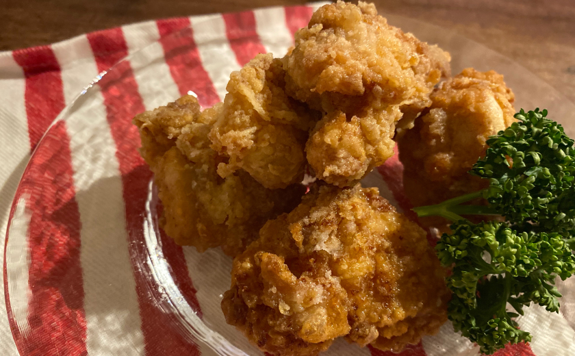

架空の絶品料理レシピサイト
絶対に失敗しない架空のからあげ

絶対に失敗しない最高においしい架空のからあげの作り方がわかったのでみなさんに共有します。とっても簡単ですが架空のからあげなので絶対に真似しないでくださいね。
材料（2人分）
- 鶏もも肉 300g
- 片栗粉 適量
- サラダ油 適量
- しょうゆ 大さじ1
- おろしにんにく 1片
- おろししょうが 1片
作り方
- 袋に一口サイズに切った鶏肉としょうゆとおろしにんにく、おろししょうがを入れてよく揉み込む
- ボウルに片栗粉を入れ、鶏肉としっかりと絡める
-
からあげを揚げている様子
180℃に熱した油で4〜5分揚げる
- お皿に盛り付けて完成
ダイジェスト動画(YouTube)
このレシピに関するよくある質問
- おろしにんにくはチューブタイプでもいいですか？
- はい、チューブタイプでも大丈夫です。
- 鶏もも肉はどこで購入できますか？
- お近くのスーパーマーケットなどでお買い求め下さい。
料理が苦手な私でも出来ました！
投稿者： さくら
実際に作ってみたら本当においしくてびっくり！架空のレシピだから失敗することもなくてとってもいい。
簡単でおいしい！
投稿者： とあるカフェの店長
とっても簡単に作れて、めっちゃおいしいレシピをありがとう！
このページの先頭に戻る